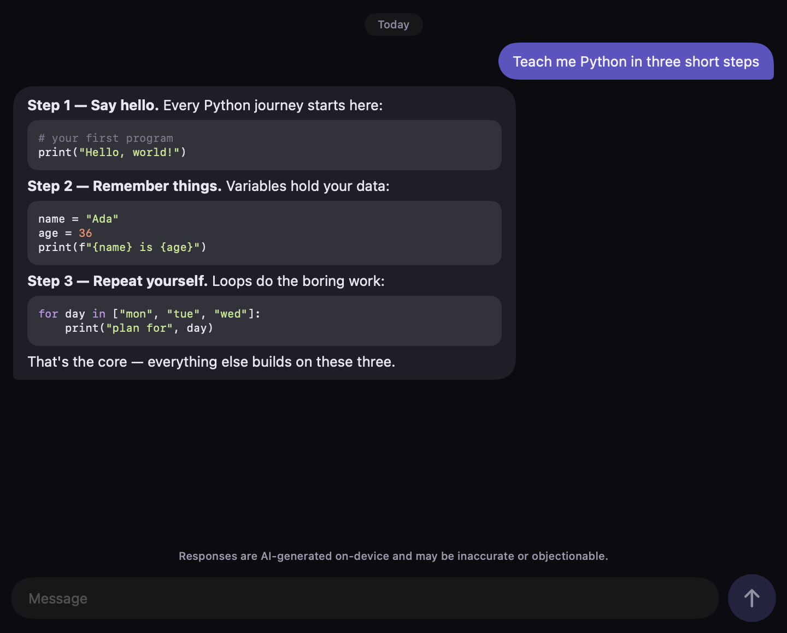
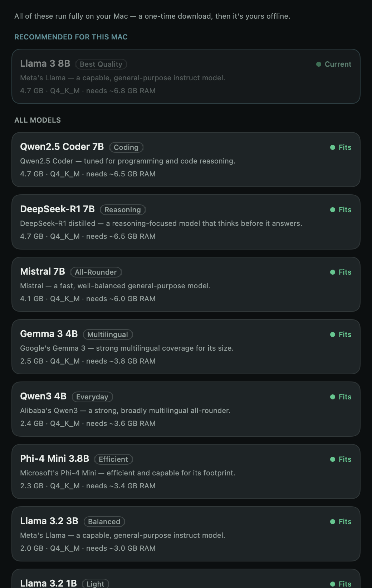
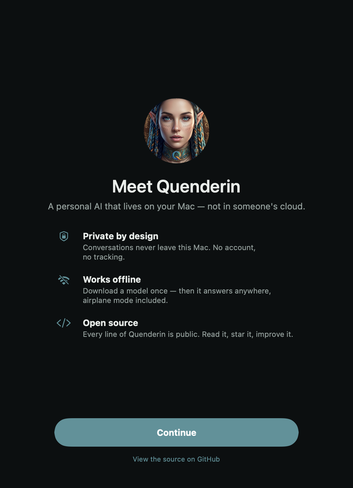
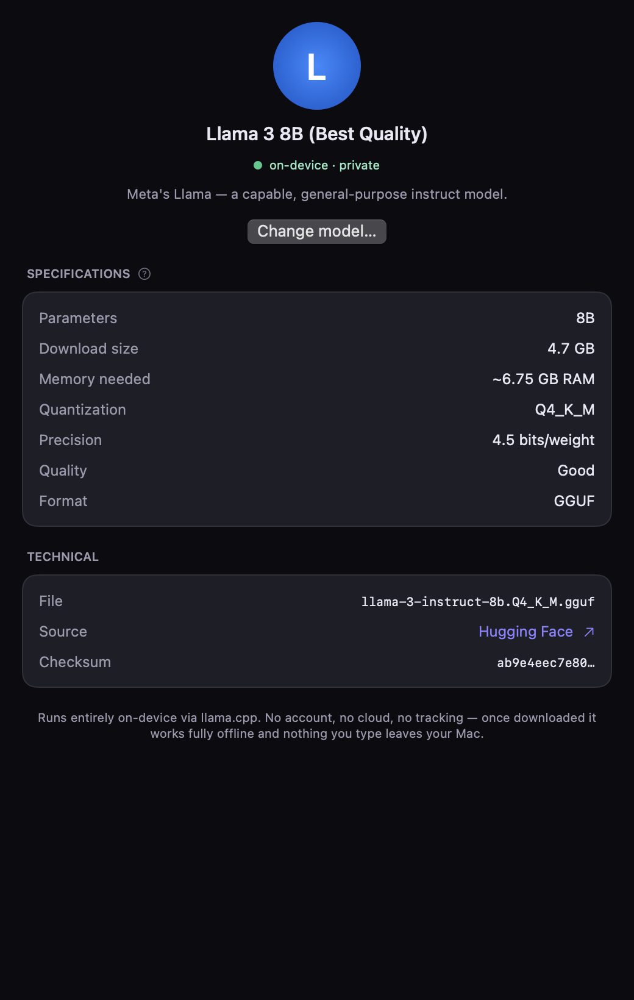
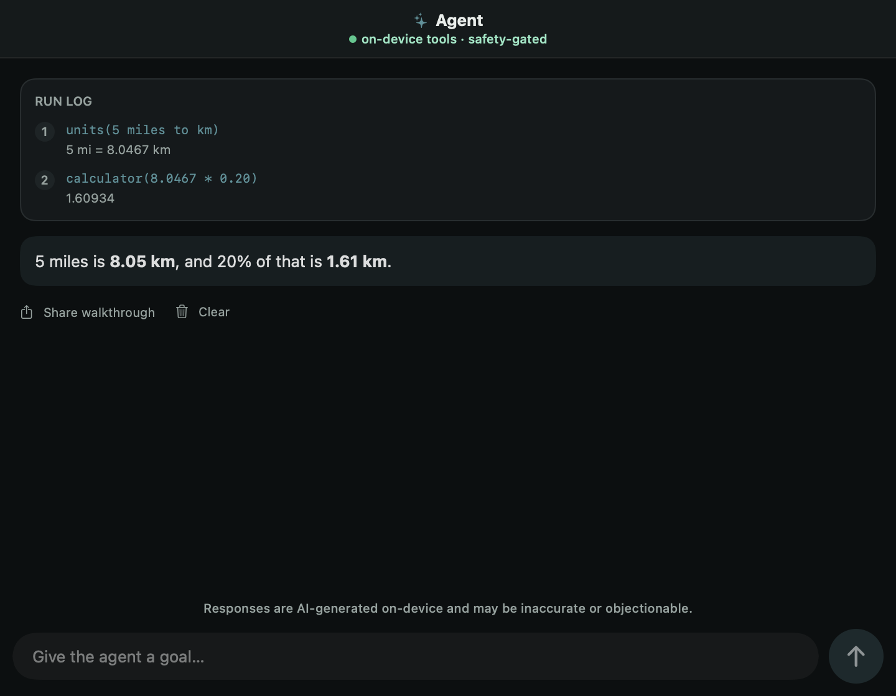

Truly offline
After the one-time download, there are zero network calls. Works at 35,000 feet or three days into a hike.
Airplane mode · still answering
Open source · every token computed in your hand
Quenderin downloads an open model (0.4–4.7 GB, your pick) and runs every token locally. We’ve measured ~15 tok/s on an iPhone 12 — quick enough to be useful, and honest enough to warn you when a model won’t fit. After the download, nothing you type touches a network.

Local inference, done right
A mainstream assistant is a thin client for a data center: lose the connection and it goes dark; keep it and your words travel to hardware you’ll never see. Quenderin is the model itself, living on the device in your hand. It’s smaller than the cloud ones and it will sometimes be wrong — we publish exactly how much smaller. It is also always there, and it is only yours.
How it works
Quenderin reads your hardware—RAM, chip, GPU—and recommends the largest model your device can run well.
Pull the model once over Wi-Fi—0.4 to 4.7 GB, your choice. It resumes in the background if you get interrupted.
Everything runs locally from then on. A clear check tells you it’s safe before you leave the grid.

Straight from the app
Every image on this page is generated from the shipping SwiftUI code — when the app changes, the site re-renders with it.



Features
After the one-time download, there are zero network calls. Works at 35,000 feet or three days into a hike.
Not a promotion — there is no server to pay for. It runs on hardware you already own.
A tool-using agent with a hard safety blocklist—it will never autonomously touch:
No accounts, no analytics, no telemetry. Your conversations are yours.
It picks a model that fits—and warns you before one that doesn’t.
MIT licensed. Read every line, audit every claim, build it yourself.
The model keeps downloading in the background—even if you switch apps the night before a trip.
Made for
Planes, trains through tunnels, trails, ships, field work — anywhere a signal can’t follow you, your assistant still does.
Legal, medical, journalism, research — work that simply can’t be sent to someone else’s server. Nothing leaves the device.
Students, hobbyists, the curious — a capable assistant with no subscription, no token meter, no account to create.
Built for the edge of the map
The night before, on hotel Wi-Fi, you download a model—and Quenderin keeps the download alive even when you switch apps, then shows a green “ready to go offline”. On the trail, with no bars, you still have a capable assistant in your pocket. That’s the whole point: an AI that doesn’t need the world to be online.
Privacy
Model catalog
Quenderin runs on llama.cpp—so it runs any GGUF model: Llama, Qwen, DeepSeek, Mistral, Gemma, Phi. Here’s the curated shortlist it recommends from, sized for everything from a Raspberry Pi to an M-series Mac.
| Model | Good for | Download | Min RAM | Quant |
|---|---|---|---|---|
| Qwen3 4BRecommended | General-purpose, Apache 2.0 — the current go-to | 2.4 GB | 4 GB | Q4_K_M |
| DeepSeek-R1 7B | Step-by-step reasoning & math | 4.7 GB | 8 GB | Q4_K_M |
| Qwen2.5 Coder 7B | Code generation & tool use | 4.7 GB | 8 GB | Q4_K_M |
| Gemma 3 4B | Multilingual, 140+ languages | 2.5 GB | 4 GB | Q4_K_M |
| Phi-4 mini 3.8B | Efficient, runs well on CPU | 2.3 GB | 4 GB | Q4_K_M |
| Mistral 7B | Fast, capable all-rounder | 4.1 GB | 6 GB | Q4_K_M |
| Llama 3.2 1B | Ultra-light — runs on a Pi | 0.8 GB | 1.5 GB | Q4_K_M |
| Qwen3 14B | Best quality for a strong device | 9.0 GB | 12 GB | Q4_K_M |
+ thousands more from Hugging Face—any GGUF works. Choosing is optional: Quenderin picks the best fit for your device automatically.
FAQ
It mostly comes down to one idea: the model runs on your device, so nothing leaves it. Here’s the rest.
Still have a question?
Ask on GitHubYes. Quenderin is MIT-licensed open source, and inference runs on your own hardware—so there are no token costs and no subscription.
No. After the one-time model download, Quenderin makes no network calls. There are no analytics, no accounts, and no telemetry. Because it’s open source, you can verify this yourself.
The desktop app runs today on macOS and Linux. Native iOS and Android apps are in active development—the same hardware-detection and model-selection engine, rebuilt natively for performance.
No. Quenderin scales from a Raspberry Pi to an M-series Mac. It detects what your device can handle and recommends a model that actually runs—down to a 0.4 GB ultra-light build.
It’s open source and runnable from GitHub today. The polished mobile apps are on the way—star or watch the repo on GitHub to hear the moment they land.
Run it today
It’s open source and runs from GitHub right now — on macOS or Linux.
git clone https://github.com/alikatgh/quenderin
cd quenderin
npm install
npm run electron:devmacOS & Linux today · iOS & Android in active development
It’s open source and runs from GitHub today. Star the repo to follow along—and watch releases to hear the moment the mobile apps land.